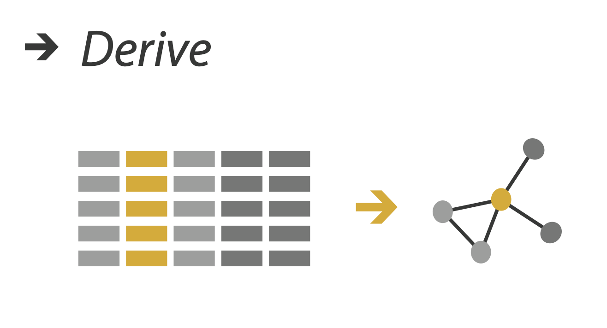
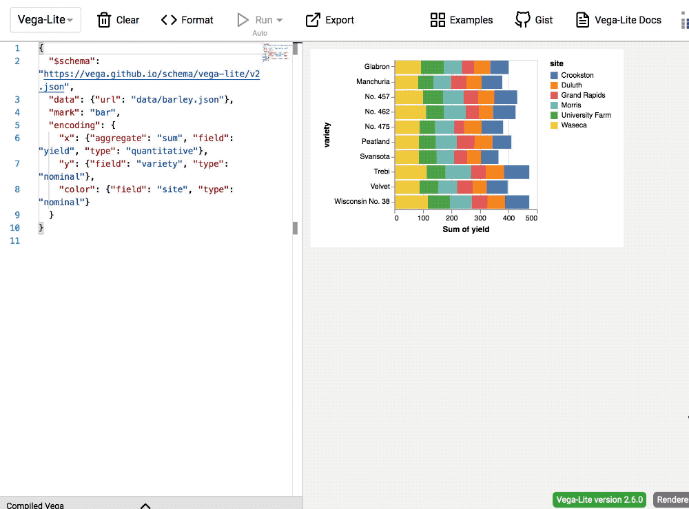
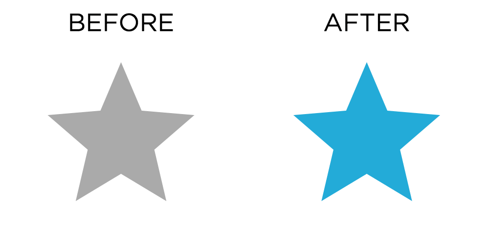
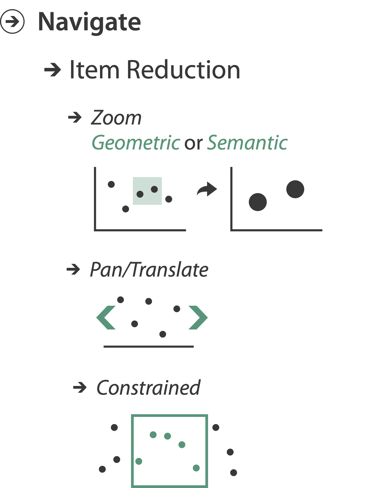
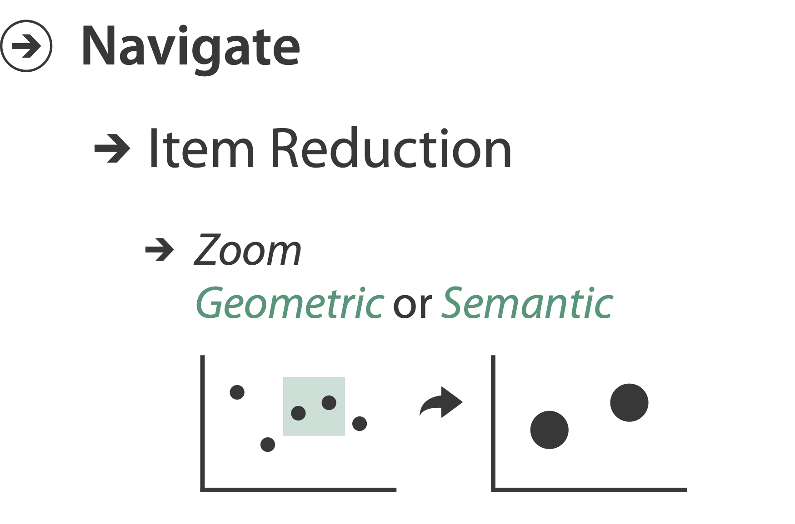

Manipulate Views
MIDS W209: Information Visualization
John Alexis Guerra Gómez | john.guerra[at]gmail.com | @duto_guerra
Andy Reagan | andy[at]andyreagan.com |@andyreagan
https://johnguerra.co/lectures/MIDS_W209_Information_Visualization/10_Manipulate_Views/
Andy Reagan | andy[at]andyreagan.com |@andyreagan
https://johnguerra.co/lectures/MIDS_W209_Information_Visualization/10_Manipulate_Views/

Partially based on slides from Tamara Munzner
What we are going to learn
- Manipulate Views
- Change Encodings / Parameters
- Animations
- Interactions
- Navigate
- Case Studies
Manipulate views
How to Handle Complexity
3 Strategies
- Change view over time
- Facet across multiple views
- Reduce items/attributes within single view
+ 1 previous
- Derive new data to show within view

Strategies
- Change view over time 👈 most obvious one: Interaction
- Facet
- Reduce
- Derive
Manipulate


Change Over Time
- Change any of the other choices
- Encoding itself
- Parameters
- Arrange: rearrange reorder
- Aggregation level, what is filtered...
- Interaction entails change
Change Encoding / Parameters
Change Encoding


Change Encoding: Vega Lite
Not so easy in D3 🤷🏼♂️
Change Parameters
- widgets and controls
- sliders, buttons, radio buttons, checkboxes, dropdowns/comboboxes
- pros
- clear affordances, self-documenting (with labels)
- cons
- uses screen space
- design choices
- separated vs interleaved
- controls & canvas
- separated vs interleaved
slide inspired by: Alexander Lex, Utah
Case Study: Changing Encoding and Parameters
Hedonometer.org
Line Chart Changes
- Change time parameter using brush
- Change time parameter using menu
- Change encoding of day-of-week using menu
Word shift graph changes
- Change time parameter with menu + date picker
- Change language parameter with translation toggle
- Change position encoding with bar selector
Demo
Animations
Reorder: DataStripes
- What: table with many attributes
- How: data-driven reordering by selecting column
- Why: find correlations between attributes

Re-Align: LineUp
- Stacked bars
- Easy to compare
- First segment
- Total bar
- Align to different segment
- Supports flexible comparison


LineUP
http://vcg.seas.harvard.edu/files/pfister/files/2013_infovis_lineup.mp4"LineUP" D3
Idiom: Animated Transitions
- Smooth interpolation from one state to another
- Alternative to jump cuts, supports item tracking
- Best case for animation
- Staging to reduce cognitive load
- Example: animated transitions in statistical data graphics
D3 show reel
Animating the show reel: Flubber
Collapsible Tree
Tree drilldown / rollup
Zoomable bar chart
- Tree drilldown / rollup
- Value comparison
Zoomable Icicle
- Tree drilldown / rollup
- Value comparison
Interactions
Selection
- Selection: basic operation for most interaction
- Design choices
- How many selection types?
- Interaction modalities
- Click/tap (heavyweight) vs. hover (lightweight but not available on most touchscreens)
- Multiple click types (shift-click, option-click, …)
- Proximity beyond click/hover (touching vs nearby vs distant)
- Application semantics
- Adding to selection set vs replacing selection
- Can selection be null?
- ex: toggle so nothing selected if click on background
- Primary vs secondary (ex: source/target nodes in network)
- Group membership (add/delete items, name group, …)

Types of selection
- Interval
- Brush 1D
- Brush 2D
- Individual
- Closest item (hover)
- Click to select
- Multi
- Shift click
- By similarity (e.g. connection, same State)
Voronoi Maps
- Tesselate the canvas
- Quickly find the closest point
Selection with brush
https://observablehq.com/@john-guerra/scatterplot-brushHighlight
- highlight: change visual encoding for selection targets
- visual feedback closely tied to but separable from selection (interaction)
- design choices: typical visual channels
- change item color
- but hides existing color coding
- add outline mark
- change size (ex: increase outline mark linewidth)
- change shape (ex: from solid to dashed line for link mark)
- change item color
- unusual channels: motion
- motion: usually avoid for single view
- with multiple views, could justify to draw attention to other views
- motion: usually avoid for single view
Interaction technology
- what do you design for?
- mouse & keyboard on desktop?
- large screens, hover, multiple clicks
- touch interaction on mobile?
- small screens, no hover, just tap
- gestures from video / sensors?
- ergonomic reality vs movie bombast
- eye tracking?
- mouse & keyboard on desktop?
slide inspired by: Alexander Lex, Utah
Tooltips
- popup information for selection
- hover or click
- can provide useful additional detail on demand
- beware: does not support overview!
- always consider if there’s a way to visually encode directly to provide overview
- “If you make a rollover or tooltip, assume nobody will see it. If it's important, make it explicit. “
- Gregor Aisch, NYTimes
Responsiveness is required
- visual feedback: three rough categories
- 0.1 seconds: perceptual processing
- subsecond response for mouseover highlighting - ballistic motion
- 1 second: immediate response
- fast response after mouseclick, button press - Fitts’ Law limits on motor control
- 10 seconds: brief tasks
- bounded response after dialog box - mental model of heavyweight operation (file load)
- 0.1 seconds: perceptual processing
- scalability considerations
- highlight selection without complete redraw of view (graphics frontbuffer)
- show hourglass for multi-second operations (check for cancel/undo)
- show progress bar for long operations (process in background thread)
- rendering speed when item count is large (guaranteed frame rate)
Navigate

Navigate: Changing viewpoint/visibility
- Change viewpoint
- Changes which items are visible within view
- Camera metaphor
- Pan/translate/scroll
- Rotate
- Zoom

Pan / Translate / Scroll
- Move up/down
- Move sideways
- Go to location

Idiom: Scrollytelling
- how: navigate page by scrolling (panning down)
- pros:
- People don't click, but they scroll
- Bottom up approach
- Good for mobile
- cons:
- full-screen mode may lack affordances
- scrolljacking, no direct access
- unexpected behaviour
- continuous control for discrete steps
- Eagereyes take on scrollyteling
- MBostock's guidelines for scrollyteling
slide inspired by: Alexander Lex, Utah
Zoom
- enlarge/shrink world == move camera closer/further
- geometric zoom: standard, like moving physical object
- semantic zoom: keep objects same size, but change the scale / viewport

Idiom: Semantic Zooming
- Semantic zoom
- Alternative to geometric zoom
- Resolution-aware layout adapts to available space
- Goal: legible at multiple scales
- Dramatic or subtle effects
- Visual encoding change
- Colored box
- Sparkline
- Simple line chart
- Full chart: axes and tickmarks

LiveRAC
Geometric Zoom
Semantic Zoom
Rotate
Zoom to constrained
Transition + Animated navigation
Barchart race
Interaction benefits
- interaction pros
- major advantage of computer-based vs paper-based visualization
- flexible, powerful, intuitive
- exploratory data analysis: change as you go during analysis process
- fluid task switching: different visual encodings support different tasks
- animated transitions provide excellent support
- empirical evidence that animated transitions help people stay oriented
Interaction limitations
- interaction has a time cost
- sometimes minor, sometimes significant
- degenerates to human-powered search in worst case
- remembering previous state imposes cognitive load
- rule of thumb: eyes over memory
- hard to compare visible item to memory of what you saw
- ex: maintaining context/orientation when navigating
- ex: tracking complex changes during animation
- rule of thumb: eyes over memory
- controls may take screen real estate
- or invisible functionality may be difficult to discover (lack of affordances)
- users may not interact as planned by designer
- NYTimes logs show ~90% don’t interact beyond scrollytelling - Aisch, 2016
Manipulate View Case Studies
Colombian Elections
Twitter Influentials
Animations on the web
What we learned
- Manipulate Views
- Change Encodings / Parameters
- Animations
- Interactions
- Navigate
- Case Studies